TP initiation Kubernetes (J3)
Objectifs
Vous possédez maintenant toutes les ressources yaml qui décrivent votre applicatif et vous pouvez donc déployer rapidement toute votre stack dans Kubernetes. C’est un bon début !
Grâce à cela, vous pouvez détruire et construire un environnement complet facilement. De plus, toutes les problématiques d'exploitation sont gérées par Kubernetes (High Availability, Scaling, Auto Healing, Loadbalancing, etc.).
Avant d'aller un peu plus loin dans la partie déploiement, un petit tour parmi le monde merveilleux des Operators Kubernetes s'impose !
Initiation aux Operators Kubernetes
Les Operators Kubernetes permettent d'enrichir Kubernetes avec de nouvelles ressources personalisées appelées CRD (Custom Ressource Definition). Il en existe pour une multitude de produits et vous pouvez même créer votre propre CRD si l'envie vous prend (si c'est utile bien sûr) !
Le cas de l'Operator Elasticsearch, appelé ECK pour Elastic Cloud on Kubernetes, sera étudié pour cette mise en pratique.
ECK
ECK est un Operator qui ajoute la possibilité de créer plusieurs CRDs, notamment :
- Elasticsearch
- Kibana
Les noms sont assez explicites : Elasticsearch déploie un cluster Elasticsearch, et Kibana le dashboard de la stack ELK.
Comme les Operators s'installent au niveau global du Cluster Kubernetes (un Operator ECK par Cluster), l'installation se fera en mode Démo.
Demo
Voilà l'Operator est installé, c'est maintenant à vous de déployer une Stack Elastic !
La ressource Elasticsearch
Tout d'abord, créez un dossier elk dans lequel vous éditerez les ressources YAML.
Vous allez ensuite commencer par le plus important : la ressource elasticsearch.
- Editez un yaml
elasticsearch.yaml.
Quelqu'un s'est amusé à effacer des valeurs dans le yaml !!
La ressource Kibana
Que serait un cluster Elasticsearch sans son fidèle dashboard Kibana ?
- Créez un fichier YAML
kibana.yamldans le dossierelk
Par contre un petit bug est passé par là, plusieurs lignes ont disparu !! Vous devez corriger ce qu'il manque dans elasticsearchRef
kibana-ingress.yaml.
Pour l'Ingress, vous devriez y arriver avec tout ce que vous avez déjà appris.
Tip
- Regarder les services que ES propose et les ports associés
- Attention le pod Kibana est en TLS il faut donc rajouter ces annotations dans votre ingress:
- Accédez au Kibana avec l'URL indiquée dans l'Ingress.
Tip
Pour l'authentification, observez le Secret -es-elastic-user qui contient le mot de passe et qui a été créé par le CRD Elasticsearch. L'utilisateur est elastic.
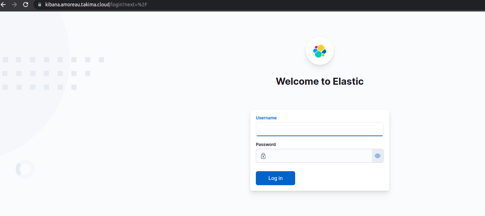
Une fois connecté, Kibana vous propose de découvrir le produit, mais pas de temps à perdre : cliquez directement sur Explore my own !
- Vérifiez que Kibana est bien lié au Cluster Elasticsearch.
Pour se faire :
- Naviguez sur le menu en haut à gauche.
- Cliquez sur Dev tools.
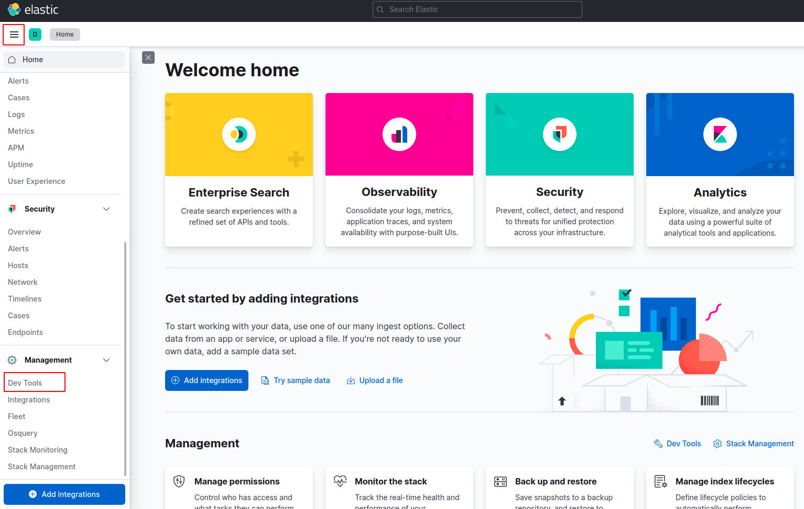
- Il est maintenant possible de requêter le cluster :
Pour voir son état de santé et les nodes du cluster :
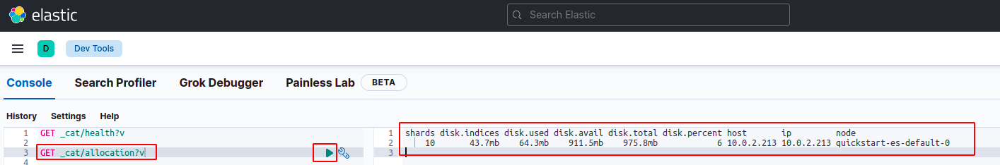
Vous pouvez retrouver la taille du volume provisionné.
Aller plus loin avec ELK
-
Scalez le Cluster ELK à 3 noeuds : éditez le CRD Elasticsearch et observez les nouveaux Pods elasticsearch se créer et s'initialiser un par un.
-
Retournez dans Kibana et relancer :
Question
Que constatez-vous ?
- Vérifiez que le Cluster fonctionne correctement.
# Créér l'index tp et ajouter un doc
PUT tp/_doc/1
{
"body": "hello"
}
# requêter le doc
GET tp/_doc/1
# Vérifier que l'index tp existe bien et qu'il contient un seul doc
GET _cat/indices?v
Cet exemple assez simple permet de démontrer qu'il est facile de créer des stacks Elasticsearch rapidement et à la demande.
Bien sûr, la configuration du CRD Elasticsearch ou Kibana peut aller bien plus loin (aussi loin que la config Elasticsearch classique le permet).
Check
Le dossier elk doit contenir les éléments suivants :
Helm
Après avoir fait un tour sur les Operator, retour aux ressources précédentes : l'API, le Front et la base de données.
Vous vous demandez peut être comment gérer plusieurs environnements, des variables entre les ressources YAML, des conditions en fonction de l'environnement, etc.
Aujourd'hui ce n'est pas possible, n'est-ce-pas ?
Surtout que dans cette formation vous utilisez un petit applicatif mais imaginez que vous en ayez des centaines à gérer (avec les architectures microservices, ça peut arriver vite !) : cela deviendrait rapidement ingérable.
Le constat est là : les ressources actuelles sont assez statiques en l’état.
Il est possible d'industrialiser tout cela.
Installation
Dans un premier temps, vous allez installer Helm, ArgoCD & Git.
Linux - Package manager - Debian/Ubuntu
curl https://baltocdn.com/helm/signing.asc | sudo apt-key add -
sudo apt-get install apt-transport-https --yes
echo "deb https://baltocdn.com/helm/stable/debian/ all main" | sudo tee /etc/apt/sources.list.d/helm-stable-debian.list
sudo apt-get update
sudo apt-get install helm
# git
add-apt-repository ppa:git-core/ppa
apt update
apt install git
Linux - Script
curl -fsSL -o get_helm.sh https://raw.githubusercontent.com/helm/helm/main/scripts/get-helm-3
chmod 700 get_helm.sh
./get_helm.sh
# must works fine
helm version
# git
# utiliser un gestionnaire de packet ou un téléchargement direct : https://git-scm.com/book/fr/v2/D%C3%A9marrage-rapide-Installation-de-Git
MacOS
Windows
# Helm
https://helm.sh/docs/intro/install/
# ArgoCD
https://github.com/argoproj/argo-cd/releases/download/v2.2.3/argocd-windows-amd64.exe
# Git
http://git-scm.com/download/win
Faire des templates avec Helm
Préambule
Helm est un outil indispensable pour déployer des stacks applicatives complètes dans Kubernetes. Pratique, c’est un projet maintenu par la CNCF.
L’idée est simple : permettre de faire des templates de toutes les ressources yaml d’une application donnée et les déployer sur Kubernetes ! En définitive, cela pourrait s'apparenter à la possiblié de déployer des plateformes complètes, clef en main, un peu sur le modèle PaaS, Plateforme as a Service.
Une stack applicative qui se déploie via Helm se nomme un Chart Helm. L’objectif ici est donc de créer un Chart Helm pour votre stack ComputerDatabase.
Setup
Avant d'utiliser Helm, vous allez mettre en place un dépôt Git avec les ressources Kubernetes fournises pour ce TP. Cela permettra plus tard d'y connecter ArgoCD.
Vous pouvez passer directement à l'étape 3 si vous avez déjà un compte Git configuré sur Gitlab.com.
- Créer un compte sur https://gitlab.com/.
- Configurez un mot de passe à votre compte si vous vous êtes connecté sans éditer de mot de passe page suivante.
- Créez un repository sur Gitlab https://gitlab.com/projects/new#blank_project.
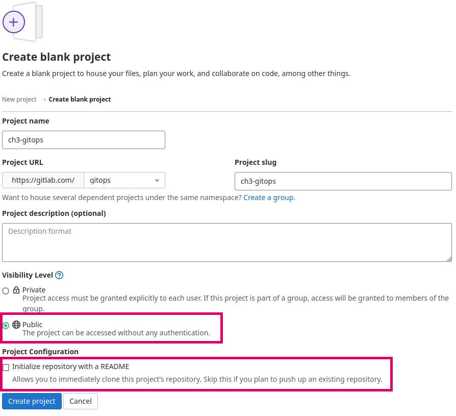
Commandes à lancer une fois votre repository créé :
git clone https://gitlab.com/votreUser/ch3_gitops.git
# votre username & password de gitlab seront demandés.
cd ch3_gitops
-
Téléchargez les premières ressources pour Helm.
-
Décompressez le contenu de l'archive et déplacez le contenu du dossier
k8s-trainees-main/boilerplate/day-3/step-1dans votre repository Gitch3_gitops. -
Une fois les ressources téléchargées, faites un premier commit et push !
Une fois l'étape de commit réalisée vous pouvez jeter un coup d'oeil aux différents éléments fournis :
templates/: contient une version template de toutes les ressources Kubernetes que vous devez déployer.Chart.yaml: décrit votre chart (la version, le nom, les mainteners).values.yaml: contient toutes les variables qui seront utilisées dans les ressources. D’une certaine manière, il décrit de manière centrale l'infra à déployer.
Regardez d'un peu plus près un Template, le Service du Front :
| templates/front-service.yaml | |
|---|---|
L'usage de variables Helm est souligné sur les deux lignes en jaune (lignes 5 & 11).
Chaque variable fait référence à une valeur dans le fichier values.yaml :
| values.yaml | |
|---|---|
Info
Il est donc possible de facilement variabiliser des éléments en plaçant les valeurs dans les fichiers values.yaml et y faisant référence via la syntaxe {{ .Values.x.y }}.
Info
Par la même occasion, vous remarquerez que la première ligne est une condition sur la variable .Values.front.enabled qui englobe l'ensemble du fichier. Ce qui se traduit par : si le Front est enable tout le fichier sera généré et cette ressource sera donc déployée.
| templates/front-service.yaml | |
|---|---|
Vous pouvez ensuite tester Helm pour générer vos ressources à partir de vos Templates et Ressources :
Vous retrouverez les ressources Kubernetes générées avec vos valeurs dans le dossier dist !
Tip
Vous pouvez aussi utiliser la commande suivante pour debug votre Chart sans créer de fichiers :
Vous pouvez tester de déployer l'ensemble de votre Chart sur votre cluster avec la commande suivante :
Info
La commande helm install|upgrade n'utilse pas les fichiers générés dans le dossier dist, elle utilise directement vos sources.
Help
Vous aurez certainement besoin de configurer le Secret (avec les identifiants reçus par mail lors du premier jour) pour pull les images :
À vous de jouer !
Maintenant que votre équipe vous a fourni le Front, à vous de faire la même chose pour l'API et la DB!
Info
Rappel des ressources à générer :
1. api-deployement.yaml
2. api-ingress.yaml
3. api-service.yaml
4. api-config.yaml
5. pg-credentials.yaml
6. pg-deployment.yaml
7. pg-pvc.yaml
8. pg-service.yaml
Help
Vous pouvez reprendre les ressources créées dans la partie précédente pour vous aider : https://gitlab.takima.io/school/k8s-trainees/-/archive/main/k8s-trainees-main.tar.gz?path=boilerplate/day-2/step-5
Tip
Pensez à bien utiliser le système de templating avec le fichier values.yaml et les différents outils de Helm.
Une fois terminé, vous pouvez mettre à jour votre Chart sur le Cluster avec la commande :
Bonus 1
Et si je vous demandais de changer le nom de votre application ? Oui, quand on fait du templating, on remarque aussi que parfois, il y a beaucoup de "redite". Les labels, le nom de l'application, etc...
C'est pour ça que helm vous permet de créer des variables supplémentaires. Par convention, nous recommandons de créer un fichier templates/_helpers.tpl.
De manière traditionnelle, le fichier peut contenir quelques lignes comme ça :
{{/*
Expand the name of the chart.
*/}}
{{- define "MyAppCtx.name" -}}
{{- default .Chart.Name | trunc 63 | trimSuffix "-" }}
{{- end }}
{{/*
Application image tag
We select by default the Chart appVersion or an override in values
*/}}
{{- define "MyAppCtx.imageTag" }}
{{- $name := default .Chart.AppVersion .Values.image.tag }}
{{- printf "%s" $name }}
{{- end }}
{{/*
Create a default fully qualified app name.
We truncate at 63 chars because some Kubernetes name fields are limited to this (by the DNS naming spec).
*/}}
{{- define "MyAppCtx.fullname" }}
{{- $name := default .Chart.Name .Values.nameOverride -}}
{{- printf "%s-%s" .Release.Name $name | trunc 63 | trimSuffix "-"}}
{{- end }}
{{/*
Create chart name and version as used by the chart label.
*/}}
{{- define "MyAppCtx.chart" -}}
{{- printf "%s-%s" .Chart.Name .Chart.Version | replace "+" "_" | trunc 63 | trimSuffix "-" }}
{{- end }}
{{/*
Common labels
*/}}
{{- define "MyAppCtx.labels" -}}
helm.sh/chart: {{ include "MyAppCtx.chart" . }}
{{ include "MyAppCtx.selectorLabels" . }}
{{- if .Chart.AppVersion }}
app.kubernetes.io/version: {{ .Chart.AppVersion | quote }}
{{- end }}
app.kubernetes.io/managed-by: {{ .Release.Service }}
{{- end }}
{{/*
Selector labels
*/}}
{{- define "MyAppCtx.selectorLabels" -}}
app.kubernetes.io/name: {{ include "MyAppCtx.name" . }}
app.kubernetes.io/instance: {{ .Release.Name }}
{{- end }}
Ces variables pourront être utilisées dans votre chart.
Appliquez les variables qui vous semblent importantes dans l'ensemble de vos ressources.
Objectifs : * une modification du chart name ou du nameOverride dans les values doit modifier le nom de toutes vos ressources. * vous ne devriez plus avoir besoin de serviceName ou tls secretName dans vos values.yaml.
Faites bien attention à vos selectors et matchSelectors !
Bonus 2
Peut-être avez-vous remarqué qu'une modification de ConfigMap ne redémarrait pas les deployments. C'est normal, car vos applications sont censées pouvoir consommer les ConfigMaps dès qu'elles le souhaitent. Pour forcer un redéploiement lors de la modification d'une ConfigMap associée, vous pouvez déclarer une annotation supplémentaire dans le Deployment concerné :
annotations:
- checksum/config: {{ include (print $.Template.BasePath "/configmap.yaml") . | sha256sum }}
Dès que le hash de la configmap changera, le deployment sera considéré comme différent, et donc appliqué.
Bonus 2
Maintenant, votre équipe revient vers vous et souhaite ajouter un nouvel environnement de test.
Aucun problème car vous avez déjà toute la structure avec Helm template !
L'environnement de test se présente comme suit :
Tip
Vous pouvez ajouter autant de Values que vous le souhaitez avec la commande Helm :
helm template --values ./values.yaml --values ./values.env.yaml ./ --output-dir dist
À vous de jouer
Avec toutes les informations dont vous diposez, vous pouvez créer les fichiers nécessaires pour que votre Chart s'adapte facilement avec le nouvel environnement.
GitOps avec ArgoCD
Avant de commencer cette partie, pensez à détruire l'environnement créé avec vos templates Helm :
Vous savez faire un joli Template Helm que vous déployez à la main.
La première chose à dire, c'est qu'il existe de multiples manières de faire du GitOps : il serait facile de mettre en oeuvre un peu de scripting avec Gitlab-CI par exemple, pour faire un helm upgrade... automatiquement lorsqu'on veut déployer un applicatif sur un cluster.
L'inconvénient avec cette approche est que le flux serait uniquement descendant (de Gitlab au Cluster).
Argo CD a deux rôles majeurs :
- Faciliter la configuration de ces jobs (plus facile que via du scripting).
- Synchroniser en permanence l'état du Cluster avec celui de Git, même si les ressources du Cluster changent de leur côté.
Vous aurez l'occasion de vérifier et constater cela dans le TP !
Accédez au portail ArgoCD.
Rendez-vous sur https://argocd.takima.cloud et entrez votre username / mot de passe (cf mail envoyé).
Importez votre Repository Gitlab.
Dans le menu de gauche, allez dans Repositories 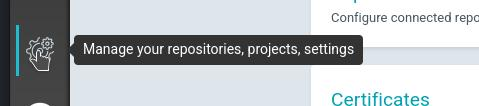
et ajoutez votre repo Git créé dans la journée.
Attention de bien associer le Repository à votre projet (qui porte le même nom que votre Username).
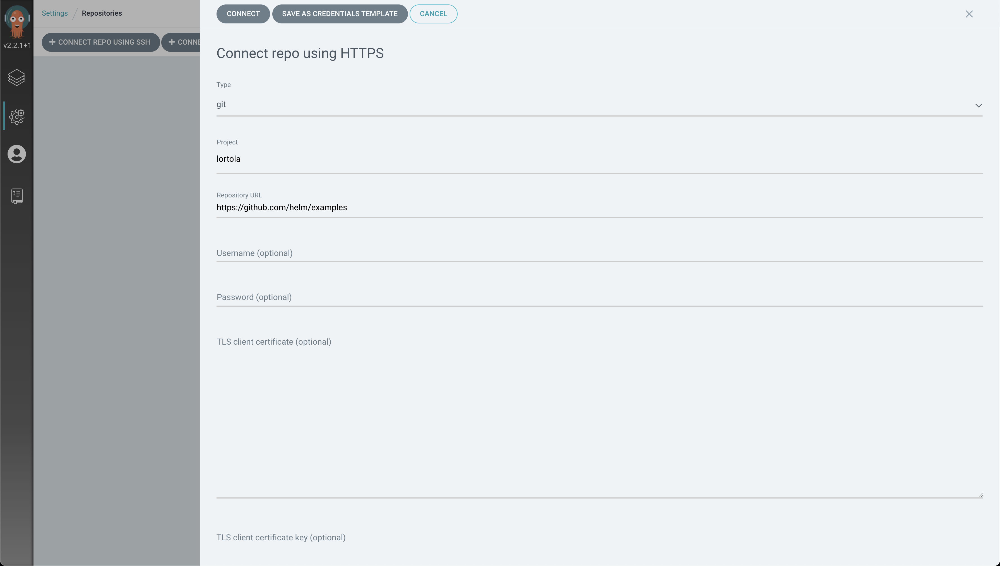
Un projet a été créé par Namespace et votre projet ne pourra déployer de ressources que dans ce Namespace.
Créez une application.
Vous allez maintenant créer votre application.
Dans ArgoCD, ajoutez une app avec le bouton approprié et le volet ci-dessous devrait s'afficher :
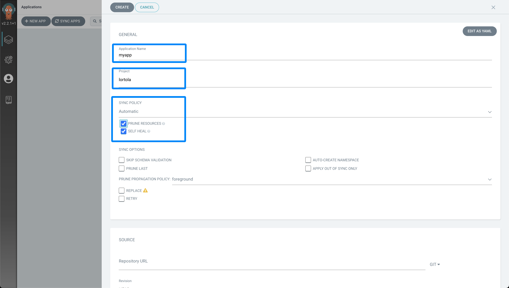
Entrez le nom de l'application ${yourName}-cdb (les noms de projet sont uniques sous ArgoCD), choisissez bien votre projet, et ajustez la politique de synchronisation.
Tip
La politique de synchronisation définit si ArgoCD sera en synchronisation manuelle ou automatique.
La synchronisation automatique, avec le Prune de Ressources et le Self-Healing sont vraiment les atouts recherchés dans ArgoCD.
ArgoCD aura donc pour objectif d'avoir un Cluster parfaitement synchronisé avec Git et aura les pouvoirs de prendre toute action pour s'en approcher.
Bien sûr, une gestion très fine des droits de "qu'est-ce que ArgoCD peut faire ou non" est disponible dans le logiciel, mais ce n'est pas le sujet de ce TP.
Choisissez votre Repository (il n'y a pas de restrictions de vue des différents Repositories) et sélectionnez la bonne branche ainsi que le chemin vers votre Chart (le dossier où se trouve le Chart.yaml et values.yaml, à la racine du dépôt ..
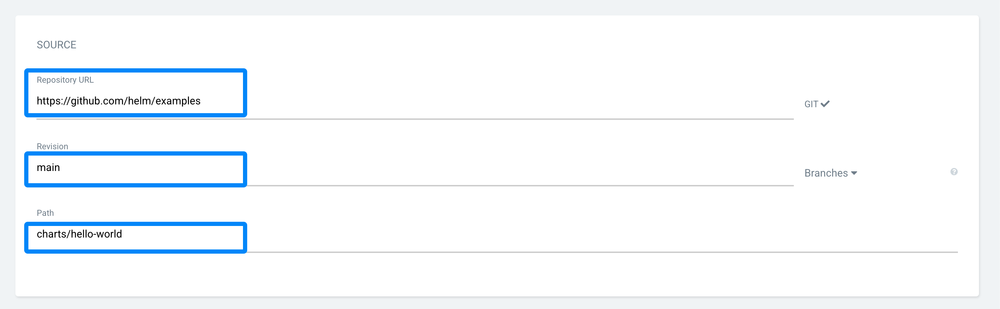
Choisissez ensuite le Cluster (il n'y en a qu'un seul, le local), ainsi que le Namespace dans lequel vous allez déployer votre app.
Le Namespace correspond à votre username, vous ne pourrez pas déployer dans un autre Namespace.
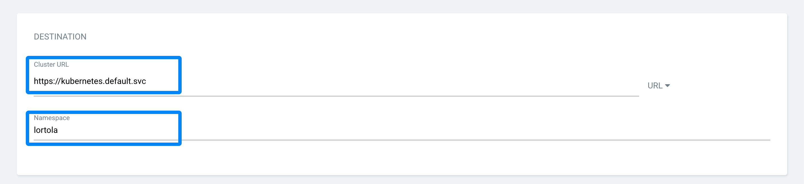
La dernière partie s'affiche automatiquement car ArgoCD va examiner votre Repository. Comme vous avez utilisé Helm, il suffit de sélectionner le chemin du values.yaml (il doit être proposé directement).
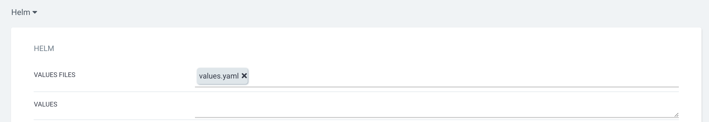
Normalement, c'est tout bon ! Il ne vous reste plus qu'à valider.
Pensez à push sur votre répertoire git quand vous faites des changements, sinon ArgoCD ne pourra pas voir ces changements.
Si tout s'est bien passé, vous devriez voir avec fierté que votre app est renseignée.
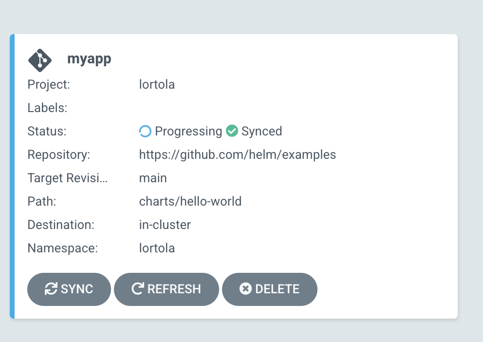
Vous pouvez cliquer dessus, observer les différentes ressources et leur état dans Kubernetes.
Félicitations, votre application est maintenant en mode GitOps !
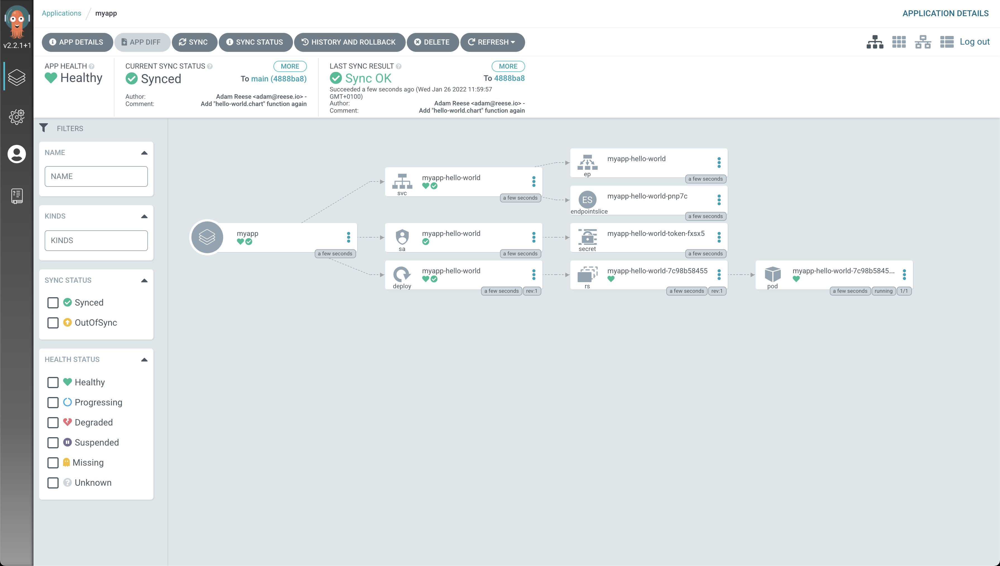
Question
Pour vérifier que tout fonctionne, essayez de détruire un deployment manuellement dans votre Cluster. Que se passe-t-il ?
Question
Essayez de modifier le values.yaml en augmentant le replicaCount par exemple. Que se passe-t-il ?
Bonus : un nouvel environnement
L'utilisation d'ArgoCD n'était pas si complexe que ça. Sauf que pour l'instant, vous n'avez qu'un environnement, et Michel, votre Product Owner adoré, souhaiterait vraiment pouvoir disposer d'un environnement de pré-production.
De manière conventionnelle, les best-practices voudraient qu'on appréhende cet environnement dans un autre Namespace et parfois même dans un autre Cluster.
Dans ce TP, on va s'autoriser à en déployer un nouveau dans le même Namespace.
Créez un nouveau fichier values appelé values.staging.yaml, utilisez le nom de domaine staging.votreusername.takima.cloud, et créez la ou les apps dans ArgoCD pour déployer la pré-production de votre app.
Pour faciliter la recherche, n'hésitez pas à créer un label staging sur toutes ces apps afin de faciliter l'affichage.
© Takima 2022